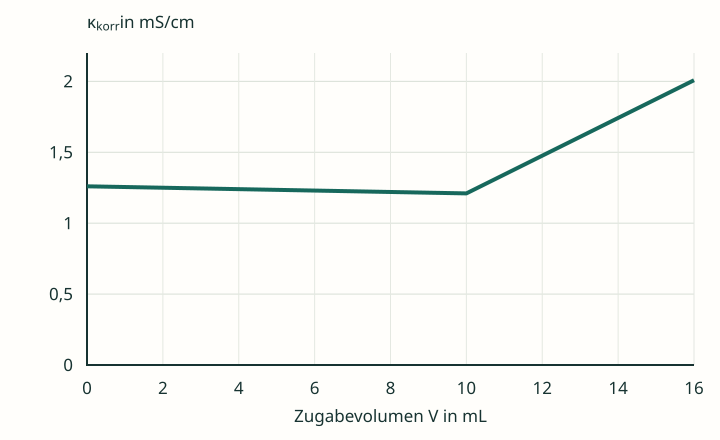

Chlorid mit Silbernitrat bestimmen
Eine reine Natriumchloridlösung enthält 1,00 mmol Chloridionen. Zugegeben wird Silbernitratlösung mit c(AgNO₃) = 0,100 mol/L. Weitere gelöste Salze sind nicht enthalten. Für die Deutung darfst du verwenden: Bei gleicher Konzentration leitet Cl⁻ etwas stärker als NO₃⁻; beide sind einfach negativ geladen.


Zur Darstellung: Die Kurve ist ein didaktisches Rechenmodell bei 25 °C, keine Messreihe. Gezeigt ist die auf das Anfangsvolumen bezogene Leitfähigkeit κkorr = κ · (V₀ + V)/V₀. Der reine Verdünnungseffekt der Zugabe ist damit herausgerechnet; Ionenbeweglichkeiten gelten als konstant. V₀ = 100,0 mL. Die Volumenkorrektur wird in Material 4.2 erklärt.
Im Kurvenmodell wird AgCl als praktisch vollständig gefällt behandelt. Die geringe Restlöslichkeit und die damit verbundene Abrundung des Übergangs sind nicht eingezeichnet.
Wer fällt aus – wer bleibt gelöst?
- Formuliere die gekürzte Ionengleichung der Fällungsreaktion.
- Bestimme das Äquivalenzvolumen aus der Kurve und prüfe es rechnerisch anhand der 1 : 1-Reaktion.
- Ordne die Ionensorten Na⁺, Cl⁻, Ag⁺ und NO₃⁻ den drei Bereichen vor, am und nach dem ÄP zu. Beschreibe die Änderung ihrer Stoffmengen.
- Erkläre, weshalb der Graph vor dem ÄP nur leicht fällt und danach steigt.
- Beurteile die Behauptung: „Am ÄP sind alle Ionen ausgefällt; die Leitfähigkeit muss null sein.“
Hilfen nach Bedarf
Hilfe 1 · Ausgangsstoffe vollständig erfassen
Natriumchlorid liefert Na⁺ und Cl⁻. Silbernitrat liefert Ag⁺ und NO₃⁻. Welche zwei dieser vier Ionensorten bilden den schwer löslichen Niederschlag?
Hilfe 2 · Vor dem ÄP bilanzieren
Zugesetztes Ag⁺ wird weitgehend gebunden. Für jedes aus der Lösung entfernte Cl⁻ kommt mit der Silbernitratlösung ein NO₃⁻ hinzu. Der Natriumbestand wird durch die Fällung nicht verbraucht.
Hilfe 3 · ÄP und Überschuss unterscheiden
Schreibe auf, was außer AgCl noch im Gefäß vorhanden ist. Nach stöchiometrischem Umsatz des Chlorids bleibt bei weiterer Zugabe Ag⁺ in zunehmendem Überschuss gelöst; NO₃⁻ kommt weiterhin hinzu.
Erklärtext und Musterlösung
Die Fällungskurve vollständig erklären
Die Reaktion lautet:
Für 1,00 mmol Cl⁻ werden 1,00 mmol Ag⁺ benötigt. Bei 0,100 mol/L Silbernitrat sind das 10,0 mL. Das entspricht dem Knick der Modellkurve.
| Bereich | Stoffmengen in der Lösung | Folge für κ korr |
|---|---|---|
| Vor dem ÄP | Na⁺ bleibt; Cl⁻ wird weniger; NO₃⁻ wird mehr. Ag⁺ wird weitgehend gefällt. | Cl⁻ wird in der Ionenbilanz durch etwas weniger leitfähiges NO₃⁻ ersetzt. Der Rückgang ist daher klein. |
| Am ÄP | Vor allem Na⁺ und NO₃⁻; jeweils 1,00 mmol. AgCl liegt als Feststoff vor. | Die Lösung enthält weiterhin bewegliche Ladungsträger. |
| Nach dem ÄP | Na⁺ bleibt; überschüssiges Ag⁺ und NO₃⁻ nehmen zu. | Zusätzliche gelöste Ionen erhöhen die Leitfähigkeit. |
Die Behauptung ist falsch. Gefällt werden Ag⁺ und Cl⁻ als AgCl. Na⁺ und NO₃⁻ bleiben als Gegenionen gelöst. Dass sie nicht in der gekürzten Reaktionsgleichung stehen, entfernt sie nicht aus der Lösung.
Auch Ag⁺ und Cl⁻ verschwinden in einer realen Probe nicht mathematisch vollständig: Das Löslichkeitsgleichgewicht lässt kleine Restkonzentrationen zu. Für die dominierende Leitfähigkeit am ÄP sind hier aber die erheblich größeren Na⁺- und NO₃⁻-Beiträge entscheidend.
Selbstkontrolle: Hast du Nitrat während der ganzen Zugabe berücksichtigt? Erklärst du den Knick durch das Ende des stöchiometrischen Chloridumsatzes?
Vertiefung · Warum wird die Volumenkorrektur erwähnt?
Die Stoffmenge an Na⁺ bleibt gleich, seine tatsächliche Konzentration sinkt aber mit wachsendem Gesamtvolumen. Unkorrigierte Messwerte enthalten deshalb zusätzlich die Verdünnung durch die Silbernitratlösung. Der Graph zeigt κkorr, damit du die Änderung des Ionenbestands getrennt davon deuten kannst.
Bei einer Lösung mit anderen Begleitionen kann der Kurvenverlauf anders aussehen. Die Erklärung dieser Seite gilt für die ausdrücklich angegebene reine NaCl-Probe.
Zurück zur Checkliste
Erkläre die Fällungskurve mit allen vier Ionensorten. Begründe besonders die verbleibende Leitfähigkeit am Äquivalenzpunkt.
Fachliche Quellen und Modellgrenzen
- Tel Aviv University: Conductometric Titrations, Tabelle 1 – Grenzleitfähigkeiten bei 25 °C, insbesondere zum Vergleich von Chlorid, Nitrat und Acetat. Die Grafiken verwenden bewusst gerundete Modellbeiträge.
- OpenStax, Chemistry 2e, 4.1: Writing and Balancing Chemical Equations – vollständige und gekürzte Ionengleichungen.
- MEBAK: Chloride – Conductometric Method – Fällung von Chlorid mit Silbernitrat und Leitfähigkeitsanstieg bei Überschuss.
- IUPAC Gold Book: Conductometric titration – Auswertung über den Schnitt linearer Kurvenbereiche.
Eigenständig entwickelte Lerntexte, Aufgaben, Musterlösungen und Grafiken. Das selbst berechnete Schema setzt konstante gerundete Ionenbeiträge, vollständige stöchiometrische Fällung und Volumenkorrektur voraus. Die reale geringe Löslichkeit von AgCl wird in der Erklärung berücksichtigt, in der grafischen Näherung jedoch vernachlässigt.